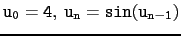

Affichage des valeurs de la suite
u0 = 3.5, un = sin(un-1)
On ouvre un tableur avec Alt+t.
Puis, on sélectionne une case du tableur (par exemple B0) et pour
avoir les valeurs de
u0 = 3.5, un = sin(un-1), on tape,
dans la ligne de commande du tableur :
tableseq(sin(u),u,4)
On obtient :
une colonne contenant sin(n), n, 3.5
et une formule evalf(subst(B$0,B$1,B2))
Les valeurs de la suite
 s'affichent dans la colonne B.